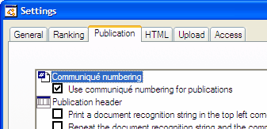

Through in the menu, it is possible to change a large number of settings for the particular event.
The settings are divided into the following groups:
Each of these groups appears on a different tab sheet in the Settings dialog.

Additionally, you can work with profiles of different settings. All this is event-specific, however you can also set options that are specific to your installation of Stagerace.